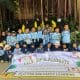

Islami
TK Islami di Bekasi Terbaik: Pilihan Tepat untuk Pendidikan Anak Usia Dini

Bekasi, sebagai salah satu kota besar di Indonesia, memiliki banyak pilihan taman kanak-kanak (TK) dengan berbagai pendekatan pendidikan.

Namun, bagi orang tua yang mencari TK Islami terbaik di Bekasi, penting untuk memastikan bahwa sekolah tersebut tidak hanya memberikan pendidikan akademik yang berkualitas tetapi juga menanamkan nilai-nilai keislaman sejak dini. Salah satu pilihan yang semakin populer di kalangan masyarakat adalah TK Islam Asy-Syams.
Mengapa Memilih TK Islami untuk Anak?
Pendidikan anak usia dini adalah fondasi penting dalam membentuk karakter dan nilai-nilai kehidupan mereka. Berikut beberapa alasan mengapa memilih TK Islami bisa menjadi keputusan yang tepat:
- Pendidikan Berbasis Nilai Keislaman TK Islami mengintegrasikan pembelajaran agama Islam ke dalam kurikulum sehari-hari. Anak-anak terajarkan untuk membaca Al-Qur’an, shalat, berdoa, dan memahami nilai-nilai keislaman dalam kehidupan sehari-hari.
- Lingkungan yang Kondusif TK Islami biasanya memiliki lingkungan yang aman dan mendukung perkembangan anak secara holistik, baik secara spiritual, emosional, maupun sosial.
- Guru yang Kompeten dan Berakhlak Mulia Guru di TK Islami umumnya tidak hanya memiliki kualifikasi akademik yang baik tetapi juga kita bekali dengan pemahaman agama yang kuat sehingga mampu menjadi teladan bagi anak-anak.
- Metode Pembelajaran Aktif dan Kreatif Selain mengedepankan nilai-nilai agama, TK Islami juga menerapkan metode pembelajaran yang menyenangkan, interaktif, dan sesuai dengan perkembangan anak.
TK Islam Asy-Syams: Pilihan Tepat untuk Pendidikan Anak Anda
TK Islam Asy-Syams di Bekasi adalah salah satu institusi pendidikan yang menggabungkan kurikulum nasional dengan pendekatan Islami yang komprehensif. Dengan visi untuk membentuk generasi Muslim yang cerdas, berakhlak mulia, dan mandiri, TK ini telah menjadi pilihan favorit bagi banyak orang tua di Bekasi.
Keunggulan TK Islam Asy-Syams
- Kurikulum Terpadu TK Islam Asy-Syams mengadopsi kurikulum yang mengintegrasikan pendidikan agama dengan ilmu pengetahuan umum. Anak-anak tidak hanya kita ajarkan membaca, menulis, dan berhitung, tetapi juga kita berikan pemahaman mendalam tentang ajaran Islam.
- Fasilitas Modern Sekolah ini terlengkapi dengan fasilitas yang mendukung proses belajar-mengajar, seperti ruang kelas yang nyaman, area bermain, perpustakaan, dan fasilitas ibadah yang memadai.
- Program Tahfidz Al-Qur’an Salah satu program unggulan di TK Islam Asy-Syams adalah tahfidz Al-Qur’an. Anak-anak kita ajarkan untuk menghafal ayat-ayat Al-Qur’an secara bertahap dengan metode yang menyenangkan dan sesuai dengan usia mereka.
- Kegiatan Ekstrakurikuler Islami TK Islam Asy-Syams juga menawarkan berbagai kegiatan ekstrakurikuler, seperti seni Islami, praktek ibadah, dan cerita Islami, yang bertujuan untuk memperkaya pengalaman belajar anak.
- Lingkungan Islami yang Positif Lingkungan sekolah yang Islami menjadi salah satu keunggulan utama TK ini. Dengan suasana yang penuh kasih sayang, anak-anak merasa nyaman dan termotivasi untuk belajar.
Lokasi Strategis di Bekasi
TK Islam Asy-Syams terletak di kawasan strategis yang mudah dijangkau, menjadikannya pilihan ideal bagi orang tua yang tinggal di Bekasi dan sekitarnya. Klik di sini untuk mengetahui lebih lanjut tentang pendaftaran murid TK di Harapan Indah Bekasi.
Menanamkan Akhlak Mulia Sejak Dini
Salah satu fokus utama TK Islam Asy-Syams adalah menanamkan akhlak mulia kepada anak-anak sejak dini. Dengan pendekatan pembelajaran yang berbasis nilai-nilai Islam, anak-anak diajarkan untuk menghormati orang tua, bersikap jujur, bertanggung jawab, dan peduli terhadap sesama.
Kemitraan dengan Orang Tua
TK Islam Asy-Syams percaya bahwa pendidikan terbaik hanya bisa dicapai melalui kerja sama yang erat antara sekolah dan orang tua. Oleh karena itu, sekolah ini aktif melibatkan orang tua dalam berbagai kegiatan, seperti seminar parenting Islami, kegiatan keagamaan, dan rapat rutin untuk membahas perkembangan anak.
Gabung Kemitraan dengan Sekolah Asy-Syams
Bagi Anda yang tertarik untuk menjadi bagian dari keluarga besar Asy-Syams, sekolah ini juga menawarkan program kemitraan. Program ini dirancang untuk membantu pengembangan pendidikan berbasis Islam di berbagai wilayah. Cari tahu lebih lanjut tentang program kemitraan ini di sini.
Testimoni Orang Tua Murid
Banyak orang tua yang merasa puas dengan pendidikan yang diberikan oleh TK Islam Asy-Syams. Berikut beberapa testimoni mereka:
- “Saya sangat senang dengan perkembangan anak saya setelah bersekolah di TK Islam Asy-Syams. Selain menjadi lebih cerdas, dia juga semakin rajin beribadah.” – Ibu Siti, Harapan Indah Bekasi.
- “Lingkungan sekolah yang Islami dan mendukung membuat anak saya merasa nyaman belajar di sini. Terima kasih TK Islam Asy-Syams!” – Bapak Ahmad, Bekasi Utara.
Daftar Sekarang!
Jika Anda sedang mencari TK Islami terbaik di Bekasi yang dapat memberikan pendidikan berkualitas sekaligus menanamkan nilai-nilai keislaman, TK Islam Asy-Syams adalah pilihan yang tepat. Jangan lewatkan kesempatan untuk memberikan pendidikan terbaik bagi buah hati Anda. Kunjungi situs resmi Asy-Syams untuk informasi lebih lanjut.
Dengan pendekatan pendidikan yang holistik dan berbasis nilai-nilai Islam, TK Islam Asy-Syams tidak hanya menjadi tempat belajar tetapi juga tempat yang membentuk karakter generasi Muslim yang unggul. Mari bersama-sama membangun masa depan anak-anak kita melalui pendidikan yang Islami dan berkualitas.


Setiap orang tua tentu menginginkan pendidikan terbaik bagi buah hatinya.

Dalam era yang semakin kompleks ini, memilih sekolah yang tidak hanya fokus pada akademik tetapi juga memperhatikan perkembangan emosional dan sosial anak menjadi sangat penting. Maka dari itu, konsep sekolah ramah anak hadir sebagai solusi ideal bagi orang tua yang ingin memberikan pendidikan holistik dan penuh kasih.
Apa Itu Sekolah Ramah Anak?
Sekolah ramah anak adalah institusi pendidikan yang mengutamakan kenyamanan, keamanan, dan kebahagiaan anak dalam proses belajar. Sekolah ini menciptakan lingkungan positif, inklusif, dan mendorong anak untuk tumbuh secara optimal baik dari sisi akademik maupun karakter. Lebih dari sekadar tempat belajar, sekolah ramah anak menjadi rumah kedua yang menyenangkan.
Mengapa Orang Tua Harus Memilih Sekolah Ramah Anak?
Banyak alasan yang mendasari pentingnya memilih sekolah ramah anak. Pertama, sekolah ini menempatkan kebutuhan dan kepentingan anak sebagai prioritas utama. Anak merasa dihargai, didengar, dan diterima apa adanya. Selain itu, guru-gurunya tidak hanya mengajar, tetapi juga membimbing dengan empati dan kepedulian.
Kedua, sekolah ramah anak mendukung perkembangan karakter. Anak-anak belajar untuk menghargai perbedaan, bekerja sama, dan menyelesaikan konflik secara sehat. Lingkungan seperti ini sangat berperan dalam membentuk pribadi yang tangguh dan peduli sesama.
Ketiga, orang tua juga dilibatkan secara aktif dalam kegiatan sekolah. Komunikasi yang baik antara sekolah dan keluarga menciptakan sinergi yang positif. Dengan demikian, orang tua tidak merasa asing atau ditinggalkan dalam proses pendidikan anak.
Ciri-Ciri Sekolah Ramah Anak yang Harus Anda Ketahui
Sebelum memilih sekolah untuk si kecil, penting bagi orang tua untuk mengenali ciri-ciri sekolah ramah anak berikut ini:
- Lingkungan Aman dan Nyaman Anak merasa aman secara fisik dan emosional. Tidak ada perundungan, diskriminasi, atau kekerasan.
- Pembelajaran Aktif dan Menyenangkan Guru menggunakan metode kreatif yang membuat anak antusias belajar. Pembelajaran tidak monoton, melainkan interaktif dan eksploratif.
- Fasilitas yang Mendukung Tumbuh Kembang Anak Sekolah menyediakan ruang bermain, perpustakaan, dan sarana olahraga yang lengkap.
- Keterlibatan Orang Tua Orang tua diajak berpartisipasi dalam berbagai kegiatan sekolah, termasuk pengambilan keputusan penting.
- Tenaga Pendidik Berkualitas dan Peduli Guru memiliki kompetensi pedagogik yang baik serta empati tinggi terhadap anak-anak.
- Kurikulum Holistik Selain akademik, kurikulum juga mencakup nilai-nilai moral, sosial, dan emosional.
Bagaimana Sekolah Ramah Anak Mempengaruhi Masa Depan Anak?
Sekolah ramah anak tidak hanya berdampak pada masa sekarang, tetapi juga membentuk fondasi kuat untuk masa depan. Anak-anak yang belajar di lingkungan yang mendukung tumbuh menjadi pribadi percaya diri, mandiri, dan memiliki empati. Mereka juga lebih siap menghadapi tantangan hidup karena memiliki keterampilan sosial yang mumpuni.
Lebih jauh lagi, anak-anak ini menunjukkan prestasi akademik yang stabil karena merasa bahagia dan termotivasi. Mereka menikmati proses belajar tanpa tekanan berlebihan. Ini tentu berbeda dengan anak-anak yang belajar di lingkungan kaku dan penuh tekanan.
Tips Memilih Sekolah Ramah Anak yang Tepat
Sebagai orang tua, memilih sekolah bukan hal sepele. Anda perlu mempertimbangkan berbagai faktor penting. Berikut beberapa tips yang bisa membantu:
- Kunjungi Sekolah Secara Langsung Jangan hanya mengandalkan brosur atau website. Dengan datang langsung, Anda bisa merasakan suasana sekolah dan melihat interaksi antara guru dan murid.
- Tanyakan Tentang Program dan Kurikulum Pastikan sekolah memiliki kurikulum yang seimbang antara akademik dan pengembangan karakter.
- Perhatikan Kualitas Guru Guru adalah ujung tombak pendidikan. Pastikan mereka memiliki latar belakang pendidikan yang baik dan pengalaman mengajar anak-anak.
- Cek Fasilitas Sekolah Fasilitas yang lengkap menunjukkan komitmen sekolah terhadap kenyamanan dan keselamatan anak.
- Evaluasi Komunikasi Sekolah-Orang Tua Sekolah yang baik selalu terbuka terhadap masukan dan menjalin komunikasi rutin dengan orang tua.
Kapan Waktu yang Tepat Mendaftarkan Anak ke Sekolah?
Banyak orang tua bingung mengenai waktu pendaftaran yang ideal, terutama untuk jenjang pendidikan awal seperti TK atau PAUD. Jika Anda termasuk dalam kelompok ini, artikel berikut dapat membantu Anda: Pendaftaran TK Bulan Apa? Panduan Lengkap untuk Orang Tua.
Artikel tersebut memberikan informasi lengkap mengenai waktu terbaik untuk mendaftarkan anak ke sekolah, termasuk tips dan persiapan penting lainnya.
Pilihan Sekolah Islam Ramah Anak di Bekasi
Bagi Anda yang tinggal di Bekasi dan sedang mencari sekolah yang tidak hanya ramah anak tetapi juga memiliki nilai-nilai Islam yang kuat, ada beberapa pilihan terbaik. Salah satunya bisa Anda baca di artikel berikut: TK Islam yang Bagus di Bekasi dengan Fasilitas Terbaik.
Artikel tersebut mengulas berbagai TK Islam yang memiliki pendekatan ramah anak dan didukung fasilitas lengkap untuk tumbuh kembang optimal.
Pertimbangan Biaya Masuk PAUD
Biaya adalah salah satu aspek penting yang tidak bisa diabaikan saat memilih sekolah. Meski Anda menginginkan yang terbaik, penting untuk tetap menyesuaikan dengan kondisi finansial. Untuk membantu Anda memahami berbagai komponen biaya masuk PAUD, bacalah artikel ini: Biaya Masuk PAUD: Panduan Lengkap untuk Orang Tua.
Artikel tersebut akan membantu Anda merencanakan anggaran pendidikan dengan lebih baik dan menghindari kejutan biaya di kemudian hari.
Kesimpulan: Investasi Terbaik untuk Masa Depan Anak
Memilih sekolah ramah anak adalah investasi jangka panjang yang sangat berharga. Dengan lingkungan yang mendukung, anak-anak tumbuh lebih bahagia, percaya diri, dan siap menghadapi masa depan. Anda tidak hanya memberi mereka pengetahuan, tetapi juga membekali mereka dengan karakter dan nilai-nilai kehidupan yang penting.
Jadi, jangan ragu untuk memulai pencarian sekolah terbaik sejak dini. Lakukan riset, kunjungi sekolah, dan ajak anak berdiskusi. Ingat, masa depan mereka dimulai dari keputusan Anda hari ini. Mari bersama wujudkan generasi cerdas dan berkarakter melalui sekolah ramah anak.
Dengan mengikuti panduan dan referensi dalam artikel ini, Anda dapat membuat keputusan terbaik demi masa depan buah hati tercinta.

Pendahuluan
Sebagai orang tua, Anda pasti ingin anak berkembang menjadi pribadi berkarakter kuat.
Salah satu nilai utama adalah kejujuran. Di lingkungan sekolah, kejujuran bukan sekadar berbicara benar, melainkan menunjukkan integritas dalam tindakan sehari-hari. Artikel ini membahas contoh sikap jujur di sekolah, memberikan panduan konkret, dan membantu Anda menerapkannya di rumah agar anak secara alami menampilkan sikap jujur.
1. Mengapa Anak Harus Jujur di Sekolah?
Pertama-tama, kejujuran menciptakan lingkungan belajar kondusif. Anak merasa nyaman mengakui kesalahan, bertanya saat tidak paham, dan bekerja mandiri. Selain itu, kejujuran membangun kepercayaan antara guru, teman, dan orang tua. Karena itu, Anda harus menekankan nilai ini sejak awal.
Transisi: Dengan memahami pentingnya kejujuran, Anda bisa:
- Mengajarkan anak untuk mengatakan “Saya tidak tahu” saat menemui soal yang sulit.
- Mendorong anak untuk mengakui jika lupa membawa tugas sekolah.
- Menghargai kejujuran dengan memberi apresiasi atas sikap jujurnya.
2. Contoh Sikap Jujur di Sekolah
Berikut ini sejumlah contoh nyata agar anak menerapkan kejujuran secara konsisten:
2.1 Mengakui Kesalahan
Saat anak lupa mengumpulkan tugas, dorong ia untuk berkata kepada guru, “Bu, maaf saya lupa. Saya pasti kerjakan malam ini.” Dengan begitu, anak:
- Bertanggung jawab atas perbuatannya.
- Belajar pentingnya disiplin.
2.2 Tidak Menyontek saat Ulangan
Ulangan merupakan momen penting untuk menunjukkan kejujuran. Pastikan anak:
- Menjawab soal berdasarkan pemahamannya.
- Menolak tawaran menyalin jawaban teman.
2.3 Mengembalikan Barang Temuan
Jika anak menemukan pensil atau buku teman di lantai, ajarkan ia untuk:
- Menanyakan pemiliknya.
- Mengembalikan barang tersebut ke pemilik atau guru.
2.4 Berani Berlindung pada Kebenaran
Ketika melihat teman mencontek, anak sebaiknya:
- Menolak ikut serta.
- Mengajak teman untuk belajar bersama daripada menyontek.
2.5 Transparansi soal Kehadiran
Misalnya, saat anak tidak masuk sekolah, ajarkan ia memberi tahu guru dengan alasan jujur—demam, sakit perut, atau keluarga.
2.6 Mengakui jika Salah Melakukan Perbuatan
Jika anak tidak sengaja memecahkan gelas di kantin, ia harus:
- Segera melapor ke guru atau petugas.
- Jika perlu, menawarkan mengganti gelas atau membantu membersihkan.
2.7 Tidak Bohong soal Tugas
Saat guru bertanya apakah anak sudah menyelesaikan PR, anak harus:
- Menjawab dengan jujur meskipun belum selesai.
- Menjelaskan alasan dan kapan tugasnya selesai.
2.8 Melaporkan Informasi yang Benar
Kalau anak tahu jadwal ujian berubah, ajarkan ia:
- Menginformasikan teman-temannya.
- Menanyakan langsung kepada guru jika ada ketidakpastian.
2.9 Menolak Memberi Jawaban kepada Teman
Anak sebaiknya menjelaskan, “Saya tidak bisa membagikan jawaban. Kita bisa berdiskusi nanti.” Tindakan ini menunjukkan sikap jujur sekaligus menghormati aturan.
2.10 Mengakui jika Lupa Membawa Barang
Saat lupa membawa kotak makan, anak bisa berkata, “Bu, maaf, saya lupa membawa bekal. Tolong bantu saya hari ini?” Kejujuran ini memudahkan komunikasi dan solusi praktis.
3. Strategi Orang Tua Menanamkan Sikap Jujur
Berikut langkah praktis agar orang tua bisa menanamkan kejujuran:
3.1 Konsisten Menjadi Teladan
Anak meniru orang tua. Tunjukkan Anda jujur, misalnya saat Anda terlambat, katakan, “Maaf, saya terlambat karena terjebak macet.” Sampaikan dengan aktif dan sopan.
3.2 Ajak Diskusi tentang Kejujuran
Luangkan waktu setiap hari untuk ngobrol. Tanyakan, “Apa yang kamu belajar hari ini? Apakah ada situasi yang menantang untuk jujur?” Diskusi ini memperkuat pemahaman dan keberanian anak.
3.3 Beri Apresiasi atas Kejujuran
Saat anak berterus terang, bahkan saat itu membuat Anda kecewa, respon dengan positif. Misalnya “Terima kasih sudah jujur. Kita selesaikan bersama solusinya.” Pengakuan nyata memperkuat perilaku positif.
3.4 Gunakan Buku atau cerita
Bacakan cerita yang menonjolkan kejujuran. Cerita seperti “Si Kancil dan Buaya” atau “Pinocchio” bisa menjadi bahan percakapan. Tanyakan, “Kenapa Kancil memutuskan jujur saat…”?
3.5 Buat Konsekuensi yang Logis
Ketika anak berbohong, hindari hukuman emosional. Gunakan konsekuensi seperti, “Karena kamu bilang sudah selesai PR tapi ternyata belum, sekarang waktumu untuk menyelesaikannya.” Tekankan pelajaran, bukan hukuman berat.
3.6 Model Game Peran
Berlatih bermain peran. Anda berperan sebagai guru dan anak sebagai murid. Simulasikan skenario seperti lupa PR, menemukan benda hilang, dan tantangan ulangan. Ini membangun keberanian di situasi nyata.
4. Mengaitkan dengan Sekolah dan Pendaftaran
Orang tua perlu memastikan anak berada di lingkungan yang mendukung kejujuran. Berikut beberapa langkah:
4.1 Memilih Sekolah yang Menanamkan Kejujuran
Cari sekolah yang menjadikan value-based education bagian dari kurikulum. Sebagai referensi:
- Artikel kami tentang [pendaftaran TK: Panduan lengkap untuk orang tua](../pendaftaran-tk-bulan-apa-panduan-lengkap-untuk-orang-tua/) membahas sekolah yang menekankan etika dan karakter sejak dini.
- Artikel tentang [TK Islam berkualitas di Bekasi](../tk-islam-yang-bagus-di-bekasi-dengan-fasilitas-terbaik/) membantu Anda menemukan sekolah Islam yang secara aktif menanamkan nilai kejujuran.
- Panduan [biaya masuk PAUD](../biaya-masuk-paud-panduan-lengkap-untuk-orang-tua/) memaparkan bagaimana memilih PAUD dengan lingkungan mendukung karakter.
4.2 Mengkomunikasikan Nilai ke Sekolah
Beritahu guru bahwa Anda ingin anak belajar kejujuran. Bersama guru, sepakati cara mengapresiasi dan menangani perilaku tidak jujur. Kerja sama ini membantu konsistensi.
4.3 Mendorong Kegiatan Sekolah
Anak bisa aktif dalam kegiatan seperti OSIS, Pramuka, atau kepanitian kelas. Kegiatan ini mengajarkan tanggung jawab dan kejujuran.
4.4 Ikuti Pelatihan Sekolah
Jika sekolah menyediakan workshop nilai karakter, Anda sebaiknya hadir. Bersama orang tua lain dan guru, Anda bisa merumuskan cara efektif menanamkan kejujuran.
5. Mengukur Perkembangan Kejujuran Anak
Terapkan evaluasi sederhana agar Anda tahu sejauh mana anak melakukan sikap jujur:
5.1 Cek Rutin dengan Guru
Setiap akhir bulan, jadwalkan waktu dengan guru wali kelas. Tanyakan hal-hal seperti “Apakah anak cekatan melaporkan kesalahannya?” atau “Bagaimana respons anak saat ada situasi menyontek?”
5.2 Catat Perubahan Perilaku
Buat buku harian kecil: kapan anak berterus terang, kapan ia menolak menyontek, dsb. Tuliskan setiap situasi nyata untuk refleksi bersama.
5.3 Beri Tantangan Baru
Tantang anak di rumah: “Hari ini, aku mau kamu mengatakan 5 hal jujur tentang perasaanmu.” Ajakan ini sekaligus membangun keberanian anak menyampaikan yang sebenarnya.
5.4 Apresiasi Publik
Saat anak menunjukkan sikap jujur, pujilah di depan keluarga. Misalnya: “Wah hebat, kamu memilih cerita sebenarnya saat ditanya guru.” Pujian ini memperkuat motivasi intrinsik.
6. Menghadapi Tantangan dan Rintangan
Mendidik anak agar jujur tidak selalu mulus. Berikut kiat menghadapi hambatan:
6.1 Saat Anak Berbohong
Dengarkan alasannya tanpa emosi. Tanyakan, “Kenapa kamu merasa perlu berbohong?” Setelah mengerti penyebabnya, dorong anak berkata jujur di saat selanjutnya.
6.2 Tekanan dari Teman
Kalau teman mengajak mencontek, ajarkan anak berkata, “Aku nggak nyaman ikut. Aku lebih suka usaha sendiri.” Latihan ini penting agar anak tegas dan tidak mudah terpengaruh.
6.3 Ketika Anak Takut Dihukum
Anak mungkin memilih berbohong daripada dihukum. Sebaiknya ganti pendekatan: “Kalau kamu jujur, kita cari solusinya bersama.” Dengan begini, anak tahu kejujuran tidak akan selalu berakibat buruk.
6.4 Menjaga Konsistensi
Orang tua harus konsisten. Hindari berkata, “Yang penting hasilnya bagus.” Karena itu menciptakan pesan bertentangan: hasil boleh diraih dengan cara apapun. Gantilah dengan, “Kami bangga kalau kamu jujur, apapun hasilnya.”
7. Manfaat Jangka Panjang dari Kejujuran
Kejujuran membawa banyak manfaat nyata bagi anak:
- Membangun reputasi positif di mata guru dan teman.
- Membantu kemampuan berpikir kritis, karena anak tidak tergantung pada jawaban orang lain.
- Memudahkan kerja sama dalam tim, karena orang akan percaya dengan integritasnya.
- Mempersiapkan masa depan, di mana kejujuran menjadi dasar autentisitas dan profesionalisme.
8. Contoh Kisah Nyata
Berikut contoh nyata dari sekolah dasar X di Bekasi:
“Saat ulangan, Ani melihat teman membuka contekan. Alih-alih ikut, Ani menutup jendela di depannya dan berkata, ‘Aku mau jawab sendiri demi tahu sejauh mana kemampuanku.’ Guru sangat mengapresiasi keberaniannya,” cerita wali kelas SD X.
Peristiwa ini mencerminkan kejujuran aktif: Ani tidak hanya menolak menyontek, tetapi juga mengambil inisiatif untuk menutup kesempatan. Peran orang tua dalam mendorong nilai ini sejak PAUD sangat besar.
9. Langkah Ringkas untuk Orang Tua
| Langkah | Tindakan |
|---|---|
| 1. | Tegaskan bahwa kejujuran jadi prioritas utama. |
| 2. | Terapkan model teladan di rumah. |
| 3. | Ajak diskusi harian soal nilai kejujuran. |
| 4. | Gunakan pujian yang konsisten atas kejujuran anak. |
| 5. | Latih lewat role-playing. |
| 6. | Tindak lanjuti kerja sama ke guru. |
| 7. | Evaluasi secara rutin bersama guru. |
| 8. | Hadapi tantangan tanpa marah, tapi dengan komunikasi. |
10. Menguatkan dengan Pilihan Sekolah yang Tepat
Memilih sekolah tidak hanya soal fasilitas, tetapi juga soal budaya dan nilai karakter. Sebagaimana dijelaskan pada artikel [pendaftaran TK bulan apa? Panduan lengkap untuk orang tua](../pendaftaran-tk-bulan-apa-panduan-lengkap-untuk-orang-tua/), pendidik sebaiknya sudah menerapkan nilai kejujuran sejak TK. Jika Anda di Bekasi, artikel [TK Islam yang bagus di Bekasi dengan fasilitas terbaik](../tk-islam-yang-bagus-di-bekasi-dengan-fasilitas-terbaik/) membahas institusi unggul yang menanamkan karakter ini.
Selain itu, artikel [biaya masuk PAUD: Panduan lengkap](../biaya-masuk-paud-panduan-lengkap-untuk-orang-tua/) menekankan pentingnya memilih PAUD yang mendukung nilai karakter serta kesiapan anak di sekolah dasar.
11. Kesimpulan
Kejujuran di sekolah bukan sekadar ucapan, melainkan tindakan konkret. Sebagai orang tua, Anda memiliki peran krusial. Anda harus memberi teladan, mendiskusikan nilai, dan menciptakan lingkungan di mana anak merasa aman untuk mengakui kesalahan.
Ciptakan konsistensi rumah–sekolah, evaluasi secara berkala, dan berikan apresiasi atas kejujuran anak. Dengan begitu, anak tumbuh menjadi pribadi bertanggung jawab, percaya diri, dan berintegritas—bekal penting untuk masa depannya.
Aksi Selanjutnya bagi Orang Tua
- Mulai hari ini, lakukan diskusi kejujuran sepuluh menit saat sarapan.
- Perhatikan satu contoh kecil sikap jujur anak sepanjang minggu.
- Apresiasi secara langsung dan terbuka.
- Koordinasi dengan wali kelas tiap akhir bulan.
- Pertimbangkan pilihan sekolah atau PAUD yang menekankan pengembangan karakter (lihat link yang sudah kami sediakan).
Dengan artikel ini, Anda sudah mendapatkan gambaran lengkap tentang contoh sikap jujur di sekolah, tips praktis orang tua, serta pilihan sekolah yang supportif. Kejujuran memang diawali dari rumah, tetapi tumbuh mekar di sekolah dan bersinergi bersama lingkungan. Sebagai pengingat, artikel terkait:
Semoga artikel ini membimbing Anda dalam mendidik anak menjadi pribadi jujur dan berkarakter. Terima kasih sudah membaca!

Membesarkan anak yang tidak hanya cerdas secara akademik, tetapi juga memiliki karakter kuat adalah dambaan setiap orang tua.
Salah satu nilai karakter utama yang perlu anak tanamkan sejak dini adalah kemampuan hidup rukun di sekolah. Artikel ini akan membahas secara mendalam tentang contoh hidup rukun di sekolah, manfaatnya, serta bagaimana orang tua dapat berperan aktif mendukung anak dalam membangun lingkungan yang harmonis di dunia pendidikan.
Mengapa Hidup Rukun di Sekolah Itu Penting?
Hidup rukun di sekolah menciptakan suasana yang mendukung tumbuh kembang anak secara optimal. Ketika anak-anak belajar dalam lingkungan yang damai, mereka merasa aman, nyaman, dan lebih terbuka untuk menerima pelajaran. Selain itu, hidup rukun membantu mereka mengembangkan empati, toleransi, dan kemampuan sosial yang sangat penting untuk kehidupan mereka di masa depan.
Lebih dari sekadar tidak bertengkar, hidup rukun berarti mampu bekerjasama, saling menghargai, dan membantu teman. Nilai-nilai ini sangat penting untuk membentuk pribadi yang matang secara emosional dan spiritual. Karena itu, penting bagi orang tua untuk memahami contoh konkret hidup rukun yang dapat orang tua ajarkan kepada anak.
Contoh Hidup Rukun di Sekolah
Berikut adalah berbagai contoh hidup rukun yang bisa orang tua temukan dan tanamkan sejak anak duduk di bangku PAUD hingga jenjang lebih tinggi:
1. Saling Membantu Teman
Anak-anak yang terbiasa membantu temannya, misalnya saat ada yang kesulitan mengerjakan tugas atau mencari barang yang hilang, sedang mempraktikkan hidup rukun. Tindakan kecil seperti ini membentuk empati dan rasa tanggung jawab sosial.
2. Tidak Mengejek atau Membully
Membiasakan anak untuk tidak mengejek teman yang berbeda atau mengalami kesulitan menunjukkan kepedulian dan penghargaan terhadap sesama. Ketika anak peka terhadap perasaan orang lain, mereka tumbuh menjadi pribadi yang bijaksana.
3. Bergiliran Menggunakan Fasilitas Sekolah
Di sekolah, anak harus belajar menunggu giliran saat menggunakan mainan, buku, atau fasilitas lainnya. Ini mengajarkan kesabaran, pengendalian diri, serta menghargai hak orang lain.
4. Ikut Menjaga Kebersihan Kelas
Kerjasama membersihkan kelas atau merapikan mainan bersama-sama adalah contoh nyata bagaimana anak bisa hidup rukun. Aktivitas ini melatih kerja tim dan rasa memiliki terhadap lingkungan belajar.
5. Bermain Bersama Tanpa Memilih-milih Teman
Mengajak semua teman bermain, tanpa membeda-bedakan latar belakang, penampilan, atau kemampuan, memperkuat persatuan dan rasa saling menghormati di antara anak-anak.
Peran Orang Tua dalam Menanamkan Hidup Rukun
Orang tua memiliki peran kunci dalam menanamkan nilai hidup rukun kepada anak. Pendidikan karakter memang dimulai dari rumah. Beberapa langkah aktif yang bisa orang tua lakukan antara lain:
- Menjadi Teladan: Anak meniru apa yang mereka lihat. Oleh karena itu, orang tua harus menunjukkan sikap toleransi, empati, dan kedamaian dalam keseharian.
- Mendiskusikan Perilaku Positif: Setelah anak pulang sekolah, ajak mereka berbicara tentang bagaimana mereka berinteraksi dengan teman.
- Mendukung Lingkungan Sekolah yang Positif: Pilih sekolah yang menanamkan nilai-nilai hidup rukun secara nyata.
Jika Anda sedang mencari sekolah yang mampu mendukung nilai hidup rukun dan pengembangan karakter secara menyeluruh, pertimbangkanlah TK Islam dengan pendekatan holistik dan islami. Untuk panduan lengkap kapan mendaftarkan anak, Anda bisa membaca artikel kami tentang pendaftaran TK bulan apa: panduan lengkap untuk orang tua.
Manfaat Hidup Rukun Bagi Perkembangan Anak
Hidup rukun tidak hanya berdampak pada suasana sekolah, tetapi juga sangat besar pengaruhnya terhadap tumbuh kembang anak:
- Meningkatkan Kemampuan Komunikasi Anak belajar mengekspresikan perasaan, menyampaikan pendapat, dan mendengarkan orang lain.
- Menumbuhkan Rasa Percaya Diri Ketika anak merasa diterima oleh teman-temannya, kepercayaan diri mereka meningkat.
- Mengembangkan Kecerdasan Emosional Hidup rukun melatih anak mengenali dan mengelola emosi mereka serta memahami perasaan orang lain.
- Menghindari Konflik dan Kekerasan Anak yang hidup rukun cenderung menyelesaikan konflik dengan cara damai, bukan kekerasan.
- Membentuk Karakter yang Tangguh Anak belajar menghadapi berbagai situasi sosial dengan sikap positif dan matang.
Memilih Sekolah yang Mendukung Hidup Rukun
Sekolah memiliki tanggung jawab besar dalam membentuk karakter anak. Karena itu, sangat penting bagi orang tua untuk memilih sekolah yang benar-benar menanamkan nilai hidup rukun. Berikut beberapa kriteria sekolah yang mendukung kehidupan sosial yang sehat:
- Adanya Program Pendidikan Karakter: Sekolah yang baik menyisipkan nilai-nilai seperti kerja sama, empati, dan toleransi dalam setiap aktivitas belajar.
- Fasilitas yang Mendukung Interaksi Positif: Ruang kelas yang nyaman, taman bermain, dan area berkegiatan bersama sangat menunjang anak belajar bersosialisasi.
- Guru Sebagai Role Model: Guru yang penuh kasih sayang dan adil dalam memperlakukan siswa menjadi panutan yang kuat.
Bila Anda tinggal di Bekasi dan mencari TK Islam dengan fasilitas terbaik serta fokus pada pengembangan karakter, silakan kunjungi artikel TK Islam yang bagus di Bekasi dengan fasilitas terbaik.
Membiasakan Hidup Rukun Sejak PAUD
Semakin dini anak terkenalkan pada nilai hidup rukun, semakin mudah mereka membentuk karakter yang kuat. PAUD adalah fase emas perkembangan anak, di mana mereka sangat mudah menyerap nilai dan perilaku yang diajarkan. Oleh karena itu, penting untuk memastikan bahwa lembaga PAUD yang dipilih juga memprioritaskan nilai hidup rukun.
Namun, sebelum mendaftarkan anak ke PAUD, orang tua tentu ingin mengetahui kisaran biaya yang dibutuhkan. Untuk informasi lengkapnya, Anda dapat membaca artikel Biaya Masuk PAUD: Panduan Lengkap untuk Orang Tua.
Kesimpulan
Hidup rukun di sekolah bukanlah hal yang bisa dianggap sepele. Ini adalah dasar dari tumbuh kembang anak yang sehat, baik secara emosional maupun sosial. Melalui contoh hidup rukun seperti saling membantu, tidak membully, bermain bersama, hingga menjaga kebersihan kelas, anak-anak belajar menjadi pribadi yang bertanggung jawab dan empatik.
Peran orang tua sangat penting dalam proses ini. Dengan memilih sekolah yang tepat, berdiskusi rutin dengan anak, serta menjadi teladan di rumah, orang tua bisa memberikan kontribusi besar dalam membentuk karakter anak yang harmonis.
Mari kita dukung anak-anak tumbuh dalam lingkungan yang rukun dan penuh kasih sayang. Karena masa depan yang cerah dimulai dari langkah-langkah kecil yang penuh makna hari ini.
Franchise Daging: Peluang Bisnis Menguntungkan di Era Kekinian

Layanan Pendidikan ABK Beserta Sistem Dukungannya: Panduan untuk Orang Tua

Memahami Sintaks Pembelajaran Project Based Learning dan Contohnya

Contoh Problematika Pembelajaran dalam Kelas

Definisi dan Peran Guru sebagai Fasilitator Pembelajaran: Panduan untuk Orang Tua

Mengenal ATP dalam IKM: Panduan Orang Tua Memahami Kurikulum Pendidikan Anak Usia Dini

Mengenal Protista: Fakta Penting untuk Orang Tua yang Peduli dengan Pendidikan Anak

Mengenal Protista: Fakta Penting untuk Orang Tua

Fungsi Epistemologi dalam Dunia Pendidikan: Panduan Penting untuk Orang Tua
Apa Itu Institusi Pendidikan? Penjelasan Lengkap, Fungsi, dan Contohnya

Kumpulan Cerita Islami Pendek untuk Anak dan Keluarga

Pengertian Islam Menurut Bahasa dan Istilah: Memahami Makna Islam Secara Mendalam

Doa Agar Anak Sukses pada Pendidikannya
Biaya Masuk TK Negeri: Panduan Lengkap untuk Orang Tua

Surat Izin Tidak Masuk Sekolah: Panduan Resmi untuk Orang Tua
Cara Menjadwalkan Kegiatan Harian Anak di Rumah